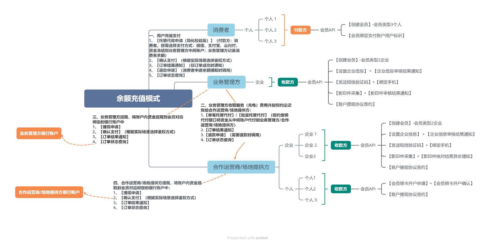

中信银行作为国内主要的商业银行之一，在对公业务和金融科技领域均有深入布局。其推出的"e管家"系列产品，旨在为特定行业和场景下的企业客户提供定制化的支付结算与金融服务解决方案。通过对公开资料的梳理，我们可以对中信银行"e管家"在产业互联网平台支付体系中的合作模式进行分析。
1. 产品定位与核心功能
中信银行的"e管家"并非单一产品，而是一个产品系列，针对不同场景有不同的侧重。例如，有面向电子商务平台的"E管家"，核心功能是为电商平台搭建平台账户体系，并提供资金清算和结算服务；有面向交易保证金场景的"信约宝"；以及面向二手房交易场景的"居间管家"等。这些产品共同构成了中信银行在特定场景下提供支付结算与资金管理服务的基础。
对于产业互联网平台而言，中信银行"e管家"的核心价值在于其能够提供：
- 平台账户体系搭建：银行可以直接为产业互联网平台及其入驻企业、个人用户建立规范的银行账户体系，包括对公账户、个人账户、保证金账户、专用账户等。这为平台实现资金的合规管理、清晰的权属划分以及后续的金融服务嵌入奠定了基础。
- 资金清结算服务：依托银行强大的支付清算系统（如大额支付系统HVPS、小额支付系统BEPS），"e管家"能够为平台提供高效、安全的资金清算和结算服务，支持大额资金的快速划转和多种结算周期。
- 场景化金融解决方案：中信银行强调"金融+科技"的服务模式，致力于将金融服务嵌入到客户的业务场景中。"e管家"可以结合产业互联网平台的具体业务流程，提供定制化的支付结算方案，例如支持担保交易、分阶段付款、自动分账等。
2. 服务模式与合作流程
中信银行与产业互联网平台的合作，通常是一种深度定制和系统对接的模式。其服务模式主要体现在：
- 深度嵌入平台业务：银行不仅仅是提供一个支付通道，更倾向于将账户管理、资金结算、乃至后续的供应链金融、跨境金融等服务深度嵌入到产业互联网平台的业务流程中，成为平台生态的一部分。
- "金融+科技"协同：中信银行利用其在金融领域的专业能力和科技投入（如大数据、人工智能），为平台提供智能化的金融解决方案，提升服务效率和用户体验。
- 定制化方案设计：针对不同产业互联网平台的特定需求（如行业特点、交易规模、资金流转模式等），银行通常会提供一对一的方案设计和技术支持。
合作流程虽然未在公开资料中详细披露，但可以合理推测，通常会包括以下关键环节：
- 需求沟通与方案设计：平台方与银行进行深入沟通，明确支付体系的核心需求、业务场景、技术要求等，银行据此设计初步的合作方案。
- 商户准入与资质审核：平台及其核心入驻企业需要符合银行的商户准入标准和反洗钱等合规要求，银行会对相关资质进行审核。
- 账户体系搭建与开立：根据平台需求，银行为平台及相关方开立所需的银行账户，并建立相应的账户管理体系。
- 系统对接与技术开发：平台的技术团队与银行的技术团队进行系统对接，通过API等方式实现支付指令、交易信息、账户信息等的交互。这通常是合作中技术难度较高、耗时较长的环节。
- 业务测试与联调：在系统对接完成后，进行全面的业务测试和联合调试，确保支付流程的顺畅、资金的准确、系统的稳定。
- 上线运营与持续优化：支付体系正式上线后，银行会提供持续的技术支持和运维服务，并根据业务发展情况对方案进行优化升级。
3. 产业互联网相关性与优势
中信银行"e管家"及其背后的银行服务体系，与产业互联网平台的需求具有较高的契合度，其主要优势体现在：
- 合规性与安全性保障：银行作为持牌金融机构，其业务的合规性和资金的安全性有最高级别的保障，这对于处理大额B2B交易和敏感资金的产业互联网平台至关重要。
- 完善的账户与资金管理能力：银行能够提供真实的、功能完备的账户体系，支持复杂的资金管理操作，满足产业互联网平台对资金精细化管理的需求。
- 强大的供应链金融服务能力：中信银行在供应链金融领域有深入布局（如"链生态"产品），能够为产业互联网平台上的核心企业及其上下游提供融资、保理、票据等综合金融服务，有效解决链上企业的融资难题，增强平台的用户粘性。
- 跨境金融服务支持：对于有国际业务的产业互联网平台，中信银行能够提供跨境支付、国际结算、汇率管理等专业的跨境金融服务。
- 品牌信誉与客户信任：银行的品牌信誉能够为产业互联网平台提供强有力的背书，增强平台用户的信任感，尤其是在吸引大型企业入驻方面具有优势。
4. 潜在挑战与考量
尽管银行合作具有诸多优势，但产业互联网平台在选择与中信银行"e管家"这类银行产品合作时，也需要考虑一些潜在的挑战：
- 技术对接复杂度与周期：与银行核心系统对接通常技术门槛较高，接口的灵活性和标准化程度可能不如第三方支付公司，对接周期可能较长，需要平台投入较多的技术资源。
- 业务流程的灵活性：银行的业务流程和审批环节相对较为严谨，可能在一定程度上影响平台的业务创新速度和灵活性。
- 成本结构：银行的服务通常涉及一定的账户管理费、年费以及较高的交易手续费（尤其是大额交易），平台需要综合评估其成本效益。
- 用户体验的优化空间：传统的银行对公业务在用户体验方面可能与互联网化的第三方支付存在差距，平台需要关注银行在提升线上服务体验方面的能力。